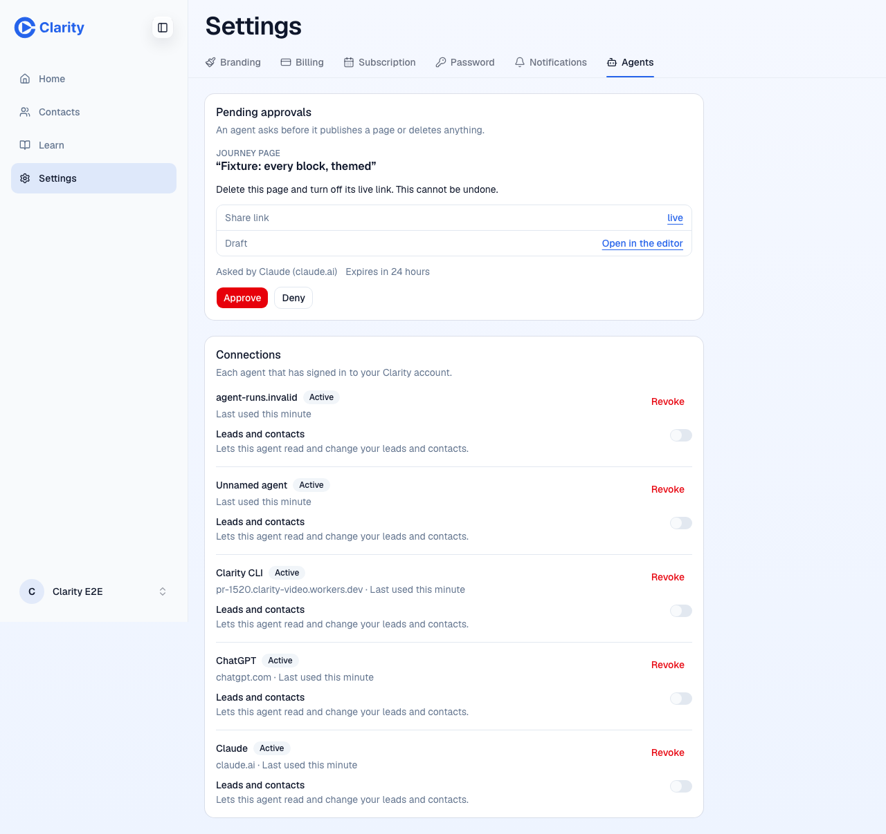

Before, on staging at main 9f0dcaf9c. Each connection is listed by its raw client id.

After, on pr-1520 at ea5652c5b. Claude, ChatGPT and Clarity CLI by name with their host. A registered client WorkOS cannot name reads "Unnamed agent", and an unreachable document reads as its host. The pending card says "Asked by Claude (claude.ai)".